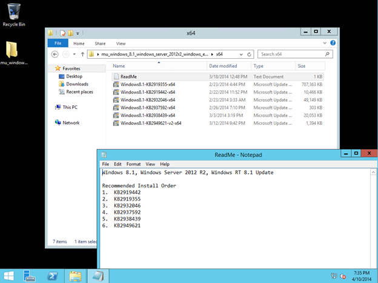
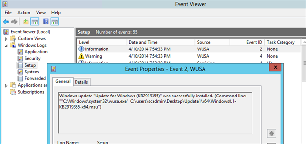

Windows Server 2012 R2 Update
Microsoft recently released a consolidated update package for Windows Server 2012 R2 and Windows 8.1 Client. this is the new service baseline for Windows Server 2012 R2 systems and it can be either downloaded using Microsoft Download Center or using Windows Update. Microsoft earlier released this update to Microsoft MSDN/TechNet Subscribers and today it will be made available to Volume License customers as an updated Windows Server 2012 R2 ISO media. Updated images also to be made available on Windows Azure in the near future.
Windows Server 2012 R2 Update Includes following
- Cumulative roll-up All previously released monthly security updates, roll-ups and individual updates since RTM
- Bug fixes
- Enterprise Mode for Internet Explorer
- Active directory fix for Office 365
- User Interface
link to download Windows Server 2012 R2 Update (KB2919355)
http://www.microsoft.com/en-us/download/details.aspx?id=42334
please note that this update contains series of updates and needs to be applied as per below mentioned order specified by Microsoft
Installation Order
1. KB2919442 (this update was made available as a part of March security updates and this should already be installed on the system if you have applied March security updates)
2. KB2919355
3. KB2932046
4. KB2937592
5. KB2938439
6. KB2934018 (Note that MSDN update has update KB2949621 which has now been replaced by KB2934018)

since it’s few updates to be applied, I came up with a script that will apply all of them in one go and you will need to reboot your server after applying all updates.
Create “installupdate.bat” within your update folder and the place following lines
@ECHO OFF
ECHO: Installing KB2919442
START /WAIT ./Windows8.1-KB2919442-x64.msuECHO: Installing KB2919355
START /WAIT ./Windows8.1-KB2919355-x64.msuECHO: Installing KB2932046
START /WAIT ./Windows8.1-KB2932046-x64.msuECHO: Installing KB2937592
START /WAIT ./Windows8.1-KB2937592-x64.msuECHO: Installing KB2938439
START /WAIT ./Windows8.1-KB2938439-x64.msuECHO: Installing KB2934018
START /WAIT ./Windows8.1-KB2934018-x64.msuECHO: Install complete – press any key to reboot.
Pause
shutdown.exe /r /t 0
exit
we can have a look at Event Log –> Windows Logs –> Setup and verify whether all updates were successfully applied.

For more information relating to this update please visit